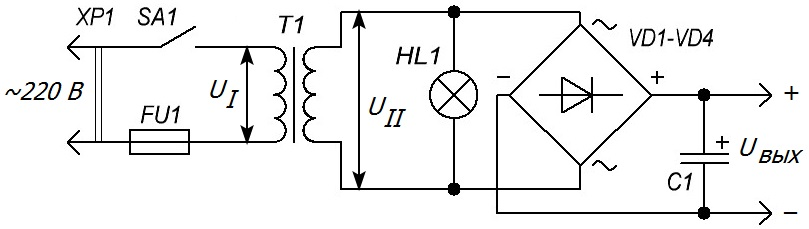
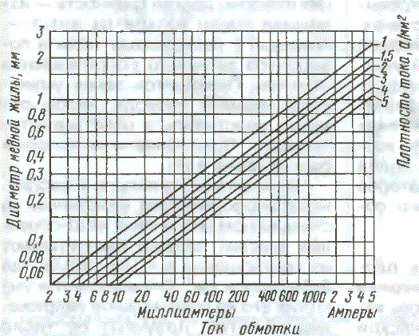
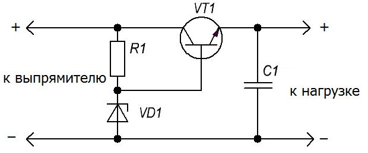

Расчет блока питания
Подавляющее большинство электронных устройств получает питание от электросети через блок питания. Он обычно содержит сетевой трансформатор Т1 (рис. 1), диодный выпрямитель VD1—VD4 и оксидный сглаживающий конденсатор большой емкости С1.

Рис. 1 - Схема простого блока питания
К вспомогательным, но нужным устройствам относятся выключатель SA1, предохранитель FU1 и индикатор включения — миниатюрная лампа накаливания HL1, с номинальным напряжением, несколько большим напряжения вторичной обмотки трансформатора (лампы, горящие с недокалом, гораздо дольше служат).
Стабилизатор напряжения, если он имеется, включается между выходом выпрямителя и нагрузкой. Напряжение на его выходе, как правило, меньше Uвых, и на стабилизаторе тратится заметная мощность.
Расчет сетевого трансформатора
Габариты и масса сетевого трансформатора полностью определяются той мощностью, которую должен отдавать блок питания:
Рвых = Uвых·Iвых.
Если вторичных обмоток несколько, то надо просуммировать все мощности, потребляемые по каждой из обмоток. К посчитанной мощности следует добавить мощность индикаторной лампочки Ринд и мощность потерь на диодах выпрямителя
Pвыпр = 2Uпр·Iвых,
где Uпр — прямое падение напряжения на одном диоде, для кремниевых диодов оно составляет 0,6... 1 В, в зависимости от тока. Uпр можно определить по характеристикам диодов, приводимых в справочниках.
От сети трансформатор будет потреблять мощность, несколько большую рассчитанной, что связано с потерями в самом трансформаторе. Различают "потери в меди" — на нагрев обмоток при прохождении по ним тока — это обычные потери, вызванные активным сопротивлением обмоток, и "потери в железе", вызванные работой по перемагничиванию сердечника и вихревыми токами в его пластинах Отношение потребляемой из сети к отдаваемой мощности равно КПД трансформатора η. КПД маломощных трансформаторов невелик и составляет 60...65 %, возрастая до 90 % и более лишь для трансформаторов мощностью несколько сотен ватт. Итак,
Ртр = (Рвых + Ринд + Рвыпр)/η.
Теперь можно определить площадь сечения центрального стержня сердечника (проходящего сквозь катушку), пользуясь эмпирической формулой:
S2 = Pтр.
В обозначениях магнитопроводов уже заложены данные для определения сечения. Например, Ш25х40 означает ширину центральной части Ш-образной пластины 25 мм, а толщину набора пластин 40 мм. Учитывая неплотное прилегание пластин друг к другу и слой изоляции на пластинах, сечение такого сердечника можно оценить в 8...9 см2 , а мощность намотанного на нем трансформатора — в 65...80 Вт.
Площадь сечения центрального стержня магнитопровода трансформатора S определяет следующий важный параметр — число витков на вольт. Оно не должно быть слишком малым, иначе возрастает магнитная индукция в магнитопроводе, материал сердечника заходит в насыщение, при этом резко возрастает ток холостого хода первичной обмотки, а форма его становится не синусоидальной — возникают большие пики тока на вершинах положительной и отрицательной полуволн. Резко возрастают поле рассеяния и вибрация пластин. Другая крайность — излишнее число витков на вольт — приводит к перерасходу меди и повышению активного сопротивления обмоток. Приходится также уменьшать диаметр провода, чтобы обмотки уместились в окне магнитопровода.
Число витков на вольт n у фабричных трансформаторов, намотанных на стандартном сердечнике из Ш-образных пластин, обычно рассчитывают , из соотношения
n = (45...50)/S,
где S берется в см2.
Определив n и умножив его на номинальное напряжение обмотки, получают ее число витков. Для вторичных обмоток напряжение следует брать на 10% больше номинального, чтобы учесть падение напряжения на их активном сопротивлении.
Все напряжения на обмотках трансформатора (UI и UII на рис.) берутся в эффективных значениях. Амплитудное значение напряжений будет в 1,41 раза выше. Если вторичная обмотка нагружена на мостовой выпрямитель, то напряжение на выходе выпрямителя Uвых на холостом ходу получается практически равным амплитудному на вторичной обмотке. Под нагрузкой выпрямленное напряжение уменьшается и становится равным:
Uвых = 1,41UII - 2Uпр - Iвых rтр.
Здесь rтр — сопротивление трансформатора со стороны вторичной обмотки.
С достаточной для практики точностью можно положить
rтp = (0,03...0,07)Uвых/Iвых,
причем меньшие коэффициенты берутся для более мощных трансформаторов.
Определив числа витков, следует найти токи в обмотках.
Ток вторичной обмотки:
III = Iинд + Pвых/UII.
Активный ток первичной обмотки (обусловленный током нагрузки):
IIА = Ртр/UI.
Кроме того, в первичной обмотке течет еще и реактивный, "намагничивающий" ток, создающий магнитный поток в сердечнике, практически равный току холостого хода трансформатора. Его величина определяется индуктивностью L первичной обмотки:
IIр = UI/2πfL.
На практике ток холостого хода определяют экспериментально — у правильно спроектированного трансформатора средней и большой мощности он составляет (0,1...0,3)IIA.
Реактивный ток зависит от числа витков на вольт, уменьшаясь с увеличением n. Для маломощных трансформаторов допускают
IIp = (0,5...0,7)IIA.
Активный и реактивный токи первичной обмотки складываются в квадратуре, поэтому полный ток первичной обмотки
II2 = IIA2 + IIР2.
Определив токи обмоток, следует найти диаметр провода исходя из допустимой для трансформаторов плотности тока 2...3 А/мм2. Расчет облегчает график, показанный на рис. 2.

Рис. 2 - График для расчета диаметра провода
Оценивают возможность размещения обмоток в окне следующим образом: измерив высоту окна (ширину катушки), определяют число витков одного слоя каждой обмотки и затем требуемое число слоев. Умножив число слоев на диаметр провода и прибавив толщину изолирующих прокладок, получают толщину обмотки. Толщина всех обмоток должна быть не более ширины окна. Более того, поскольку плотная намотка вручную невозможна, следует полученную толщину обмоток увеличить в 1,2...1,4 раза.
Упрощенный расчет выпрямителя
Допустимый прямой средний ток диодов в мостовой схеме должен быть не менее 0,5Iвых, практически выбирают (для надежности) диоды с большим прямым током.
Допустимое обратное напряжение не должно быть меньше 0,71UII + 0,5Uвых, но поскольку на холостом ходу Uвых достигает 1,41UII, обратное напряжение диодов целесообразно выбирать не меньше этой величины, т. е. амплитудного значения напряжения на вторичной обмотке. Полезно учесть еще и возможные колебания напряжения сети.
Амплитуду пульсаций выпрямленного напряжения в вольтах можно оценить по упрощенной формуле:
Uпульс = 5Iвых/С.
Выходной ток подставляется в амперах, емкость конденсатора С1 — в микрофарадах.
При токах нагрузки, составляющих несколько десятков миллиампер и менее, допустимо ограничиться простейшим устройством со стабилитроном.
При больших токах нагрузки рекомендуется применить несколько более сложный стабилизатор (рис. 3).

Рис. 2 - Схема стабилизатора с транзистором
В этой схеме к простейшему стабилизатору на элементах R1, VD1 добавлен эмиттерный повторитель, собранный на транзисторе VT1. Если в простейшем стабилизаторе ток нагрузки не может быть больше тока стабилитрона, то здесь он может превосходить ток стабилитрона в h21Э раз, где h21Э — статический коэффициент передачи тока базы транзистора в схеме с общим эмиттером. Для его увеличения часто на месте VT1 используют составной транзистор. Выходное напряжение стабилизатора на 0,6 В меньше напряжения стабилизации VD1 (на 1,2 В для составного транзистора).
Расчет стабилизированного блока питания рекомендуется начинать именно со стабилизатора. Исходя из требуемых напряжения и тока нагрузки, выбирают транзистор VT1 и стабилитрон VD1. Ток базы транзистора составит:
Iб = Iвых/h21Э.
Он и явится выходным током простейшего стабилизатора на элементах R1 и VD1. Затем оцените минимальное напряжение на выходе выпрямителя Uвых — Uпульс — оно должно быть на 2...3 В больше требуемого напряжения на нагрузке даже при минимально допустимом напряжении сети. Далее расчет ведется описанным способом. Более совершенные схемы и расчет стабилизаторов даны в [3].
Источники:
radiomexanik.spb.ru - Расчет блоков питания
ЛИТЕРАТУРА
- Поляков В. Уменьшение поля рассеяния трансформатора. — Радио, 1983, № 7, с. 28, 29.
- Малинин Р. М. Питание радиоаппаратуры от электросети. — М.: Энергия, 1970.
- Москвин А. Транзисторные стабилизаторы напряжения с защитой от перегрузки. — Радио, 2003, № 2, с. 26—28.